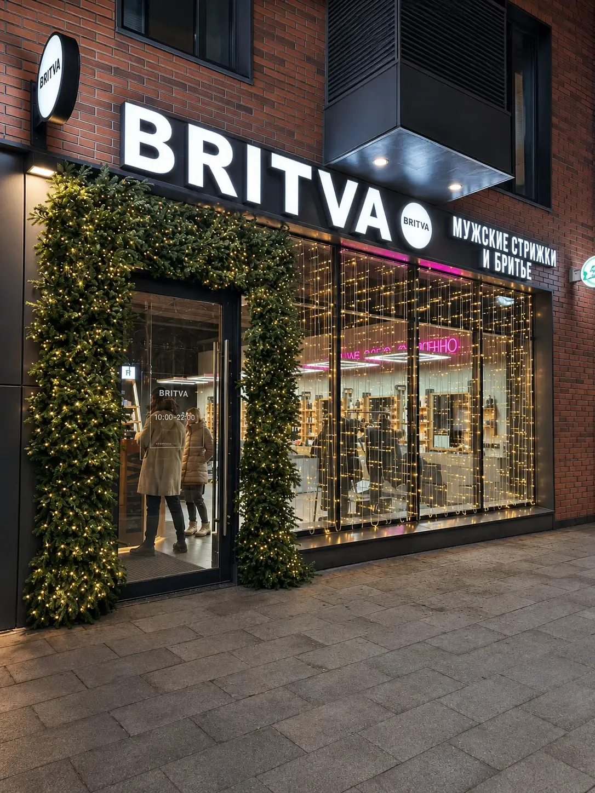
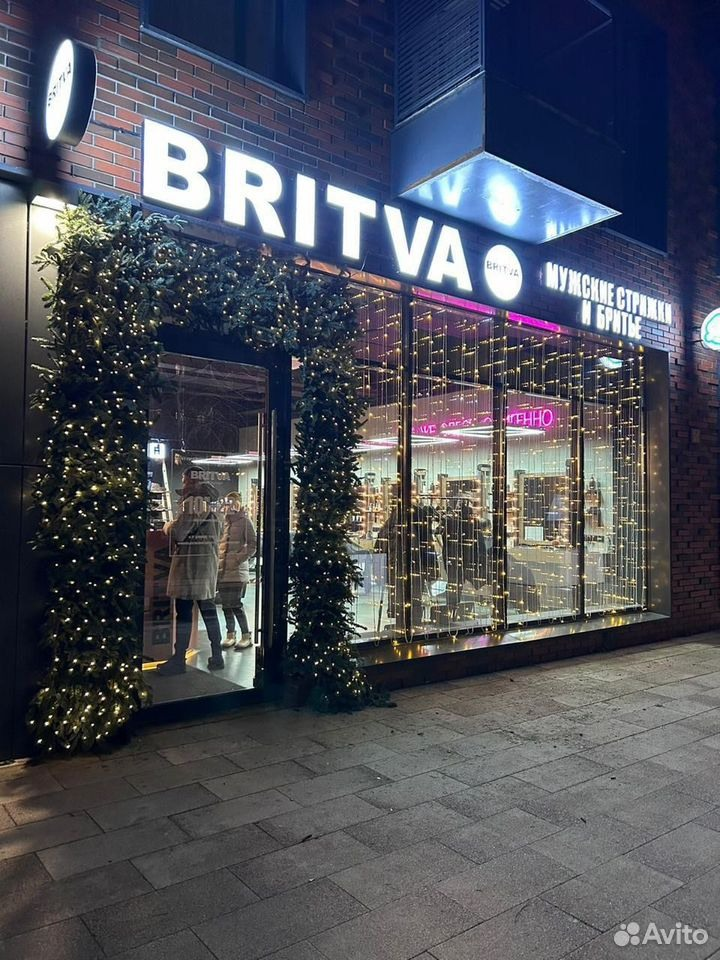

← К галерееПортфолио
BRITVA / вечерний свет
Хвоя обрамляет дверь и вывеску, световой занавес раскрывает стеклянную часть фасада. В вечернем кадре хорошо виден баланс плотной зелени и прозрачного света.

Посмотреть исходник
